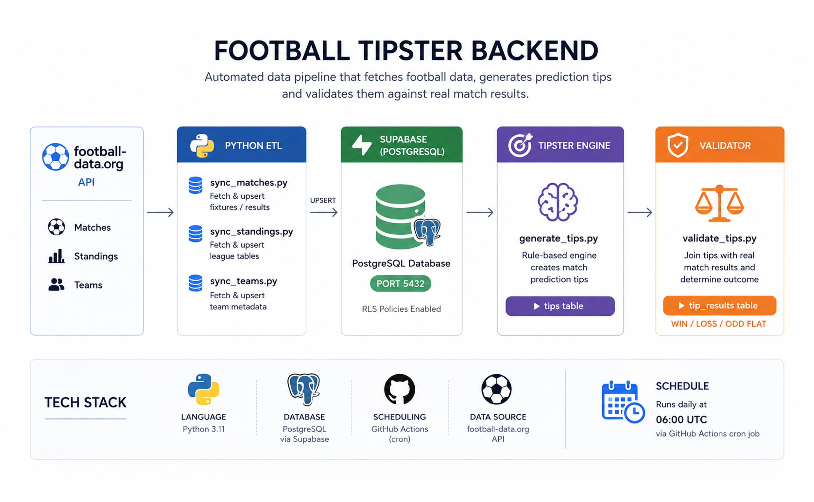
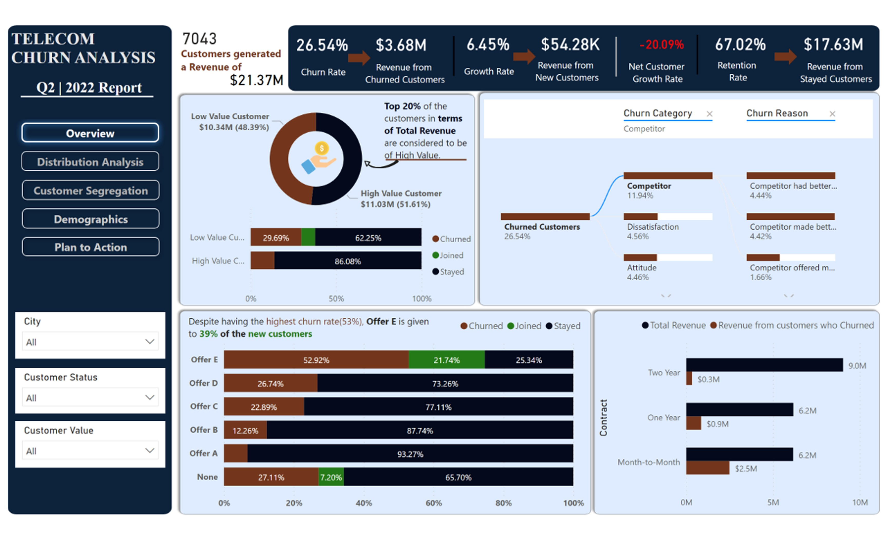
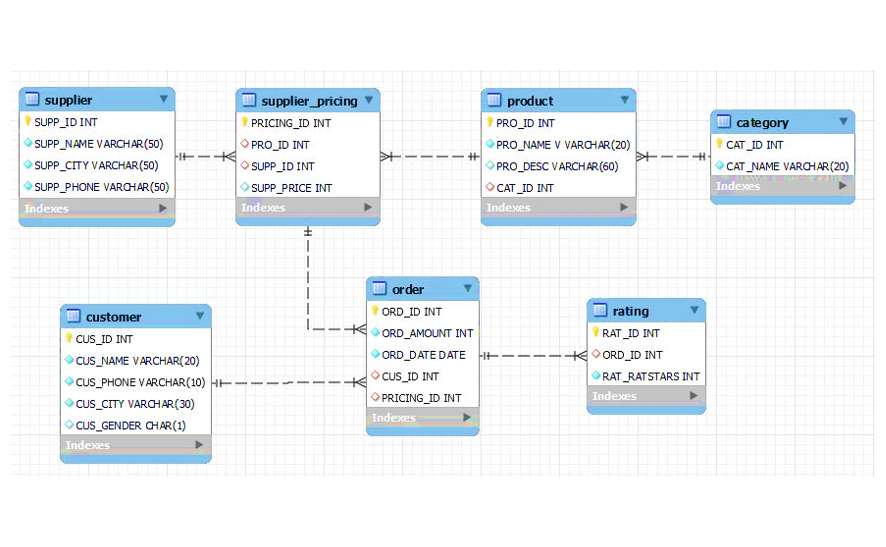
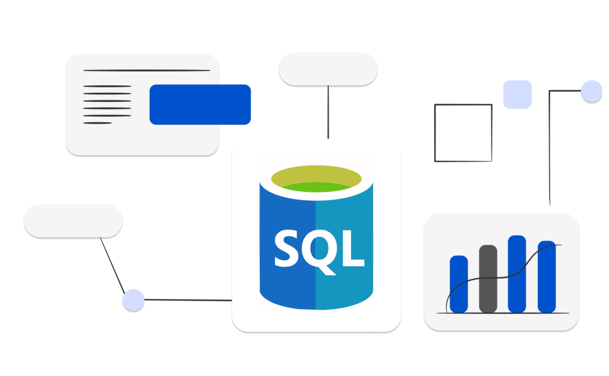
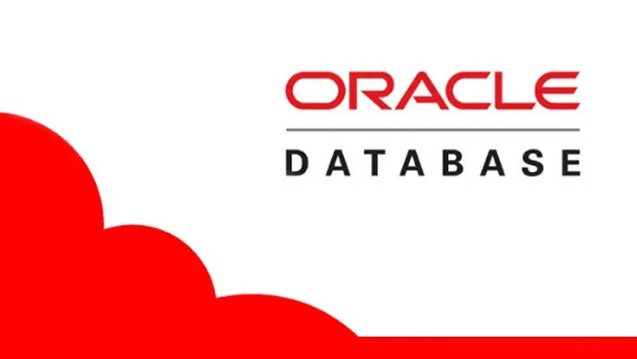

A Data and Analytics Engineer passionate about turning messy, complex datasets into meaningful insights. With a knack for building efficient data pipelines, I specialize in cleaning, organizing, and transforming raw data into something businesses can actually use. I’ve had the chance to work across industries, uncovering trends, solving problems, and helping teams make smarter decisions.
Collaboration and innovation are at the heart of what I do. Whether it’s mentoring team members, automating workflows, or designing dashboards that tell a story, I’m always focused on delivering impactful solutions. I believe in making data accessible and actionable, turning it into a true asset for any organization.
WORKFLOW
Python and SQL for data manipulation, automation, and analysis.
Building and orchestrating ETL/ELT pipelines with dbt, Dagster, Airbyte, and PySpark, including custom API integrations.
Modeling and querying data across Snowflake, PostgreSQL, MySQL, MSSQL, and Oracle.
Delivering business-facing dashboards and reports with Power BI, Tableau, Looker, and Advanced Excel.
Dimensional modeling, data quality testing, documentation, version control with Git, and Agile delivery.
Communicating insights through compelling, easy-to-understand narratives and visuals that help non-technical stakeholders make informed decisions.
Remote, Kenya
Nairobi, Kenya
Nairobi, Kenya
Kenyatta University, Nairobi
Specialization in Applied Mathematics and Computer Science, covering:

Python ETL pipeline that fetches live football data, generates rule-based predictions, validates outcomes, and writes everything to a Supabase database. Runs automatically every day via GitHub Actions.
Python-based predictive model that classifies likely COVID-19 cases from patient symptom and test data.

Power BI dashboard analyzing customer churn drivers to help the business identify at-risk segments and act on retention.

Relational database designed in MySQL Workbench to model and organize sales data for reliable reporting.

T-SQL analysis of the AdventureWorks 2019 database to surface sales team performance trends.

Oracle SQL queries exploring client data to uncover patterns useful for account management.
Python scripts connecting to and manipulating a SQLite3 database, covering core CRUD operations.